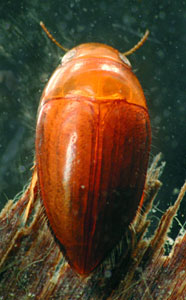
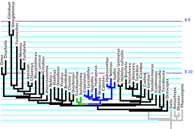
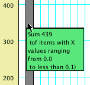
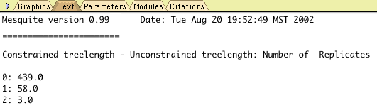
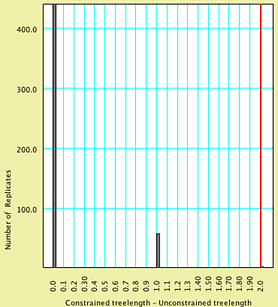
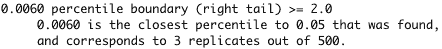
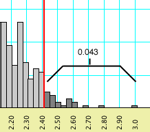
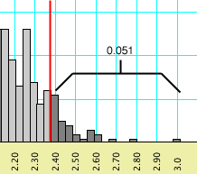

Testing monophyly of a group of beetles
David R. MaddisonNote: Zephyr version 2 and later contains a built-in SOWH test that automates the process of doing this statistical test.
The question
There is an enigmatic group of terrestrial beetles called the Trachypachidae. These had traditionally been considered to be related to other terrestrial beetles in the suborder Adephaga, but later analyses of morphological data suggested (Bell, 1966; Hammond, 1979; Roughley, 1981; Ward, 1979) that they were instead closely related to some water beetles, the Dytiscoidea. |
| The terrestrial Trachypachus |
|  |
| An aquatic dytiscoid (Hydrocanthus sp.) |
Shull et al. (2001) report sequence data of the 18S rRNA gene suggesting that trachypachids are not related to dytiscoids, but are instead related to some other terrestrial beetles. For example, the most parsimonious trees in one analysis have trachypachids with other terrestrial adephagans, and not with dytiscoids. Forcing trachypachids with dytiscoids increases the treelength by 9 steps.
However, given the vagaries of the evolutionary process and phylogenetic inference, it is possible that even if trachypachids and dytiscoids are truly related, one might incorrectly infer that they are not, just by chance or because of difficulties such as long branch attraction (Felsenstein, 1978; Hendy & Penny, 1989; Huelsenbeck, 1997). A statistical test could help us determine whether or not a difference of 9 steps between trees with trachypachids placed with dytiscoids and unconstrained trees is expected under the hypothesis that trachypachids and dytiscoids are related.
A statistical test
Is 9 steps a significant difference in treelength in this context? Can we can reject the monophyly of trachypachids plus dytiscoids?To test the hypotheses that trachypachids are related to dytiscoids, we first need to flesh out its details of the hypothesis. It needs to be detailed enough to allow us to predict the observations we would expect to see if this hypothesis were true. First of all, we will need a detailed phylogenetic hypothesis. We could find the tree of highest likelihood for 18S rDNA under the constraint that trachypachids are with dytiscoids; for one matrix, this tree is as shown below, with trachypachids marked in green and dytiscoids in blue.

Branch lengths of this tree and parameter values for a GTR + Gamma + Proportion Invariant (GTR+G+I) model of evolution are estimated by maximum likelihood using the 18S rDNA data. We thus have built a model that contains our best guess of the nature of evolution presuming that trachypachids and dytiscoids form a clade; the details of the model were established using the 18S rDNA data.
We can now ask: if evolution occurred under a GTR+G+I model with the parameter values as inferred, up the tree shown above (with trachypachids and dytiscoids forming a clade), then what would we expect the difference in treelength to be between the most parsimonious trees constrained to have trachypachids with dytiscoids and the most parsimonious unconstrained trees? Would that difference in general be similar to the observed value, 9? Or is 9 an unexpected value? Specifically, is 9 a value that we would expect to observe less than 0.05 of the time? If so, then we could reject the hypothesis that trachypachids are related to dytiscoids.
This test is an example of the use of parametric bootstrapping (Huelsenbeck et al., 1995; Swofford et al., 1996; Goldman et al., 2000). It is almost identical to the monophyly test proposed by Huelsenbeck et al. (1996), except that they use a difference in likelihood rather than treelength as their test statistic. Treelength is used here for pedagogical reasons as it allows the reader to conduct the test quickly; the methods described below could easily be modified to use likelihood values instead.
Building the statistical test
To conduct this test, in Mesquite open the example file "study001.nex", in the folder Mesquite_Folder/docs/mesquite/studies/study001/. This file contains a matrix of 18S rDNA, and the tree of highest likelihood found in which trachypachids are with dytiscids, with branch lengths inferred from the data. It also contains a GTR+G+I model with parameters inferred by PAUP* using maximum likelihood and 18S rDNA. We will ask Mesquite to simulate 100 matrices, and then (using the batch file Mesquite produces) ask PAUP* to find the most parsimonious trees with trachypachids constrained to be with dytiscoids and the most parsimonious unconstrained trees, and write their treelengths to a scorefile. Mesquite will then read in the results and calculate the distribution of treelength differences, allowing us to determine if the observed value of 9 is unusual.The simulations can be done by choosing (Tree Window) Analysis > Batch Architect > Export Matrices & Batch Files.... After selecting "Simulated Matrices on Current Tree" and "Evolve DNA Characters", choose the GTR+G+I model. You will then be presented with the Export Matrices & Batch Files dialog box. Give a base name for the matrices of "TDTest", and do 100 replicates. We will use the template "PAUPConstraintTestParsimony":

If you wish to look at the contents of this template, touch on "Edit Templates", and in the Template Manager, select "PAUPConstraintTestParsimony", and press "View". (As this template is built-in, you can't edit it, only view it.) You will see some elements of the batch files that will be produced.

The complexity of this template needn't be of concern. If you are interested, details of how it works are presented in " Design of Batch Templates". Just press "OK" to get back to the Template Manager, and then press "Done".
You are almost ready to have Mesquite simulate the matrices. However, the template we are using requires that we specify a tree to use as a constraint tree. In this case, the constraint tree is one with trachypachids with dytiscoids, but with no other structure. A tree like this is stored in the file under the name "TD constraint". To choose it, touch the "Choose Tree" button, and select "TD constraint".
All the options have now been chosen. Press the "OK" button in the Export Matrices and Batch Files dialog box to start the simulation. You will be asked for a location to save the files, and be given some messages. When you are asked for the number of characters, Mesquite recognizes that you are calculating some elements of the model using an existing matrix (in particular, the frequencies of A, C, G, and T), and for this reason it gives as the default number of characters the number in the original matrix. That's the number we want to use in this case, as we want the simulation to be as realistic as possible.
Once the simulations are all done, then go into PAUP*, and execute the file "PaupCommands.nex". When PAUP* completes its analyses, go back to Mesquite, and choose(Tree Window) Analysis > Batch Architect > Show Results via Instruction File.... Choose the file "MesquiteInstructions", in the same folder as the simulated matrices, and then choose the results file (which should be called "TDTestScore.scr",). Mesquite should then show you a histogram of the treelength differences.
Interpreting the results
An analysis of this exact sort but with 500 replicates yielded the following histogram:
Of the 500 replicates, 439 had a value 0, 58 had a value 1, and 3 had a value 2. You can determine these numbers by touching on each bar with the arrow:

You can also see these values by going to the Text view of the chart (by touching the Text tab at the upper part of the chart window):

To see what values are in a specified percentile of the left or right tail of the distribution, you can choose (Bar & Line Chart) Chart> Analysis > Percentiles.... In the dialog box presented, you can choose the value of the percentile, the color of the bar to be shown, and whether the left or right tails (or both) are calculated. By default, the percentile value is 0.05; on this example, it would be displayed as:

All values to the right of this red bar are thus in the extreme of the distribution, and our simulation would suggest that any value greater than or equal to 2 would occur with a frequency of less than 0.05. Our observation of 9 is thus an unlikely outcome if our hypothesis were true. Thus, we can reject our hypothesis at p < 0.05, and conclude that trachypachids and dytiscoids do not form a clade.
As it may be hard to interpret the value of the boundaries by the colored vertical lines, you might want to know the exact values of the percentile boundaries. This information can can be gathered by looking at the text view for the histogram. Toward the bottom of the text view in the above example is the following:

The percentile bar shown will be that that is closest to that requested, but not over it.
The behavior of Mesquite can best be illustrated with another example. If you requested a percentile of 0.05, and if a percentile bar might be placed at 0.043 (left, below), but moving it one increment higher would include enough values to increase the percentile to 0.051 (right, below), then the percentile bar shown will be 0.043.

Summary
The hypothesis tested herein was the monophyly of a clade. The steps in the test are:- Determine the observed value of the test statistic for the observed DNA sequences. In this case, the treelength of unconstrained most-parsimonious trees was determined using PAUP*, and was then subtracted from constrained (trachypachids with dytiscoids) treelength.
- The best tree matching the hypothesis to be tested (trachypachids with dytiscoids) is inferred using the available sequence data, with branch lengths inferred using maximum likelihood. This is the model tree.
- Values of parameters of a model of sequence evolution (gamma shape parameter, rate matrices, etc.) are inferred using maximum likelihood on the model tree for the DNA sequences.
- The data matrix is opened in Mesquite, along with the model tree. Submodels and a model of character evolution are created within Mesquite to match those inferred.
- Mesquite's Batch Architect is used to automate the process of simulating the evolution of multiple (100 or more) data matrices under this model, using Mesquite's Genesis package. Batch Architect also builds a command file for PAUP* and an instruction file for Mesquite so that it can interpret the results of the PAUP* analyses.
- The command file is executed in PAUP*, telling PAUP* to search for the shortest constained and unconstrained trees for each of the simulated matrices, accumulating the results into a score file.
- The Mesquite Instructions file is then read into Mesquite, and the score file is read, and Mesquite presents a histogram of the distribution of the test statistic (constrained treelength - unconstrained treelength).
- The observed value of the test statistic is compared to the distribution of the statistic expected under the model as determined by the simulations. If the observed value is more extreme than that expected (say, greater than 95% of the expected values), the hypothesis is rejected.
References
Bell, R. T. 1966. Trachypachus and the origin of Hydradephaga. Coleopts Bull. 20:107-112.Felsenstein, J. 1978. Cases in which parsimony and compatibility methods will be positively misleading. Systematic Zoology, 27, 401-410.
Goldman, N., J. P. Anderson, and A. G. Rodrigo. 2000. Likelihood-based tests of topologies in phylogenetics. Syst. Biol. 49:652–670.
Hammond, P. M. 1979. Wing-folding mechanisms of beetles with special reference to investigations of Adephagan phylogeny. Pp. 113-180 in Carabid beetles; their evolution, natural history, and classification (T. L. Erwin, G. E. Ball, D. R. Whitehead, and A. Halpern, eds.) . W. Junk, The Hague.
Hendy, M.D. & Penny, D. 1989. A framework for the quantitative study of evolutionary trees. Systematic Zoology, 38, 297-309.
Huelsenbeck, J.P., Hillis, D.M. & Jones, R. 1995. Parametric bootstrapping in molecular phylogenetics: Applications and performance. Molecular zoology: Advances, Strategies, and Protocols; Symposium held during Annual Meeting of the American Society of Zoologists, St. Louis, Missouri, USA, January 5-8, 1995 (ed. by J. D. Ferraris & S. R. Palumbi), pp. 19-45. Wiley-Liss, Inc., New York.
Huelsenbeck, J.P. 1997. Is the Felsenstein zone a fly trap? Systematic Biology, 46, 69-74.
Huelsenbeck, J. P., D. M. Hillis, and R. Nielsen. 1996. A likelihood-ratio test of monophyly. Syst. Biol. 45:546-558.
Roughley, R. E. 1981. Trachypachidae and Hydradephaga (Coleoptera), a monophyletic unit? Pan-Pac. Entomol. 57:273-285.
Shull, V., A.P. Vogler, M.D. Baker, D.R. Maddison, and P.M. Hammond. 2001. Sequence alignment of 18S ribosomal RNA and the basal relationships of adephagan beetles: Evidence for monophyly of aquatic families and the placement of Trachypachidae. Systematic Biology, 50:945-969.
Swofford, D. L., G. J. Olson, P. J. Waddell, and D. M. Hillis. 1996. Phylogenetic inference. Pp. 407-514 in Molecular Systematics (D. M. Hillis, C. Moritz, and B. K. Mable, eds.) . Sinauer, Sunderland, MA.
Ward, R. D. 1979. Metathoracic wing structures as phylogenetic indicators in the Adephaga (Coleoptera). Pp. 181-191 in Carabid beetles; their evolution, natural history, and classification (T. L. Erwin, G. E. Ball, D. R. Whitehead, and A. Halpern, eds.) . W. Junk, The Hague.